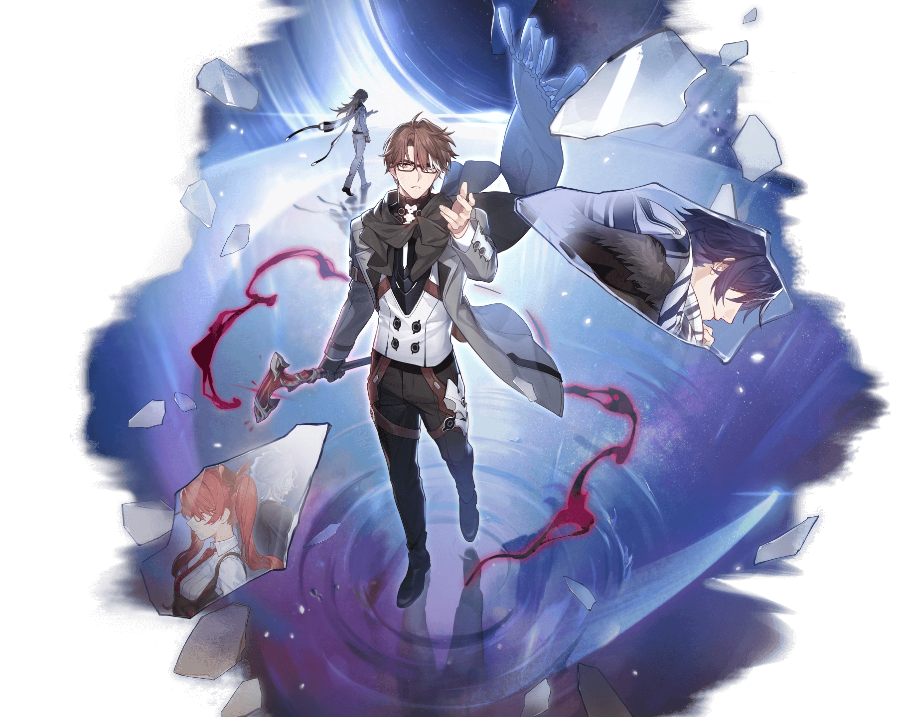

Descripcion del personaje
Welt es el primer personaje de Honkai Star Rail en pertenecer al Elemento Imaginario, uno de los elementos con mejor tipo de Ruptura de Debilidad en el juego, ya que esto nos permite retrasar la acción de los enemigos y reducirles la velocidad al mismo tiempo.
Su efecto como personaje de la vía de la Nihilidad consiste en ralentizar la velocidad de los enemigos tanto con su Habilidad Básica como con su Habilidad Definitiva (aunque esta última tiene una probabilidad base de acierto mayor), cosa que está muy rota, debido a que nos permitirá atacar un mayor número de veces siendo esto más rentable que otro personaje que pueda aportar un buff al Ataque o al Daño Crítico.
Por lo tanto, su kit de habilidades que le permite Aprisionar enemigos y Ralentizarlos es muy compatible con personajes como Asta que nos potencian la Velocidad (para tener un mayor número de acciones antes de que ataque el enemigo), con Seele que puede tener turnos adicionales cuando derrota a un enemigo con cualquiera de sus habilidades y con Bronya que puede adelantar las acciones de los aliados gracias a su Habilidad Básica.
Introduccion al personaje
 Anteriormente visto en Honkai Impact 3dr, Welt Yang regresa como uno de los miembros del Astral Express, un grupo que viaja por el universo luchando contra amenazas misteriosas. Aunque el contexto es diferente, Welt sigue siendo un personaje clave, y su experiencia como líder y combatiente lo hacen una pieza esencial del equipo.
Anteriormente visto en Honkai Impact 3dr, Welt Yang regresa como uno de los miembros del Astral Express, un grupo que viaja por el universo luchando contra amenazas misteriosas. Aunque el contexto es diferente, Welt sigue siendo un personaje clave, y su experiencia como líder y combatiente lo hacen una pieza esencial del equipo.
En Star Rail, se le describe como un veterano sabio con habilidades que le permiten controlar el espacio, creando barreras y manipulando el entorno para proteger a sus aliados y debilitar a sus enemigos.
Ambos juegos destacan su lealtad, liderazgo y compromiso en la lucha contra el mal, manteniendo su papel como defensor de la humanidad.

Calidad del personaje

VIA del personaje
Nihilidad

Estadisticas del personaje
- PV: 1125
- ATQ: 620
- DEF: 509
- VEL: 102